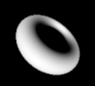

DrawImplicitSurface.h
Function.h
A simple, unsophisticated ray tracing program for implicit surfaces. The intersection of rays with the surface uses a bisection root finder that does not perform very well at the contours of an object. The code is not difficult to modify to use a better root finder. A single directional light is used, but again the code can be easily modified to allow multiple lights and ones of different types. A rendered torus is shown below.
|  |